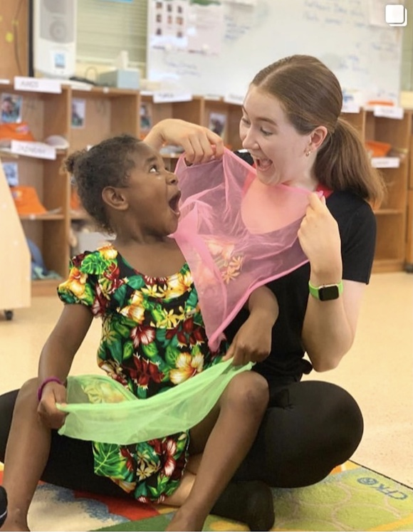
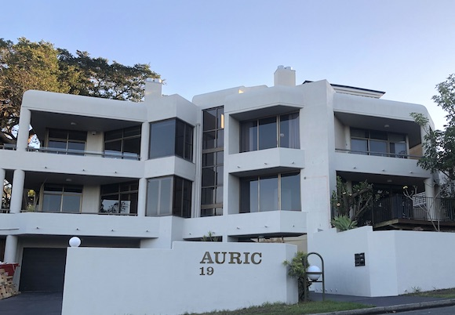

The Fargo Chronicle
Twenty-first Edition
December 2020
Free
Cape crusade
For the most part university has been online this year with very little direct contact. Regardless, Ella has persevered and is achieving excellent results: three years done with the finish in sight for mid 2022.
Workwise it’s been another busy year. Ella has been juggling work with Lorna Jane and the Australian Girls Choir. Plus, in the leadup to Christmas, Ella revisited her role as a Christmas Elf at Santaland.
Ella was selected as part of a team of three to visit the community of Lockhart River in the cape of Queensland with The Girls From Oz. G-Oz is a sister charity organisation to the Australian Girls Choir (both run by the Australian School of Performing Arts). The program provides access to performing arts to engage and re-engage females living in some of the most at-risk communities in Australia.
Ella made many wonderful connections with the staff and kids. Pictured is Ella in a Kindy session using scarves as a colourful way to explore music, movement, and drama.
Golden year

For us, the year has been dominated by the sale of our home of 13 years in Fig Tree Pocket and our desire to move closer to the city. This meant a seven-month stint in a rented townhouse in Toowong and the purchase and renovation of a unit nearby.
What SUP?

Julie joined a team of writers at Brisbane School of Distance Education to write an Australian Curriculum based program for Prep students attending Queensland distance education schools.
It will be back to class and online lessons in 2021.
Since the walking tracks at Mt Coot-tha are now closer to home, Julie has been making good use of them and is also a regular at her gym.
The word is...

The renovations have consumed much of Paul’s year, either in organising repairs to the old house or in gutting and replacing every tile and tap in the new unit.
The move to Toowong situated us much closer to Kate, Ben, and Luna with whom Paul was able to catch up on new literature and enjoy the sensation that is ‘Bluey’.
Le deux!

Max has had somewhat of a turbulent year but thankfully the French connection has remained safe and healthy.
Max’s band was booked to play a strong line up of festivals across Europe which, sadly, were all cancelled.
Max turned his energy to other endeavours and along with French collaborator ‘Le Superhomard’, was lucky to score a handy recording contract.
Making a splash

Kate, Ben and Luna live just 600m away and often visit for a swim.
Kate is teaching two days per week at West End State School and Luna is thriving at day care for those days.
Picture of health

Mun found 2020 challenging with the lockdowns but continues to maintain a healthy lifestyle in her unit in Currumbin.
Plain sailing

Jason helped out with our renovation by undertaking all the painting while we, well Julie actually, worked as his offsider, when available.
Jason has rented out his unit in Palm Beach and he and his partner Julie have moved into a newly completed, beachside apartment also at Palm Beach which Julie bought off-the-plan.
Lookout

Tabitha and Lachie enjoyed a road trip at the end of their uni studies in 2020. They sailed in the Whitsundays with Jason, Julie, Leanne & Kris and then travelled further around North and Far North Queensland.
Golding Street
Our new unit is in a building named Auric, from the Latin word ‘Aurum’, meaning gold: a reference to the street name.
The complex comprises just four units with ours on the second level.
We are enjoying the low maintenance of living in a unit which allows us access to a small rooftop pool and large entertainment area.